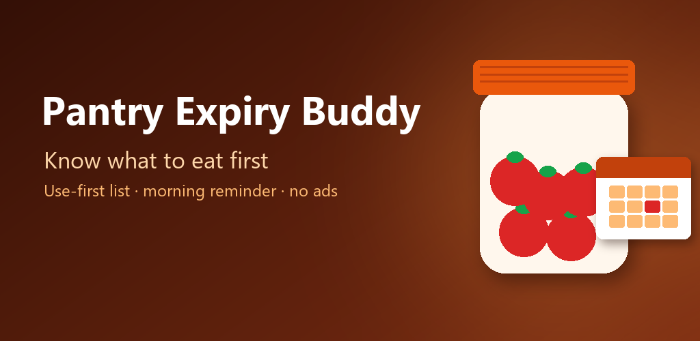
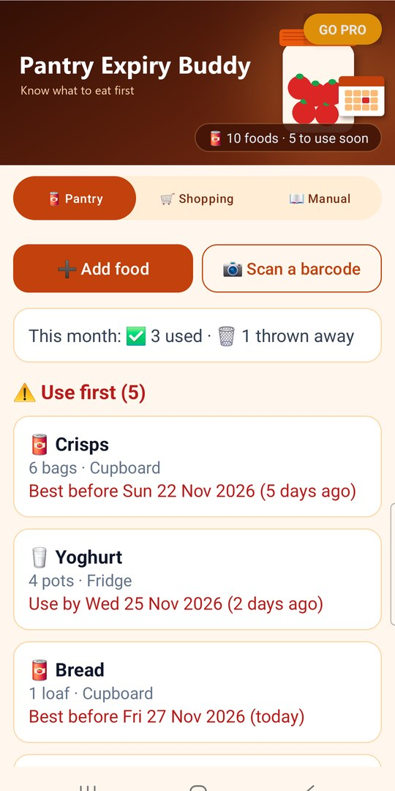
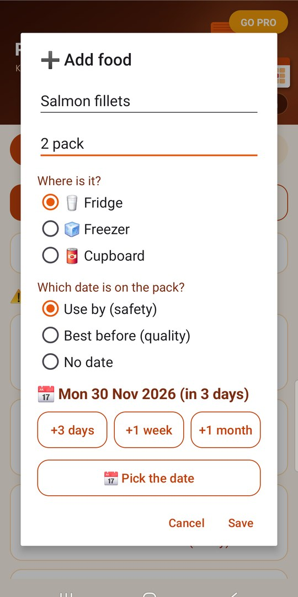
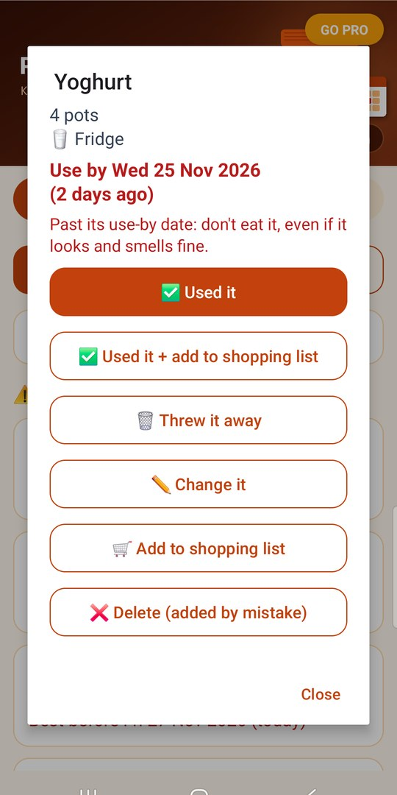
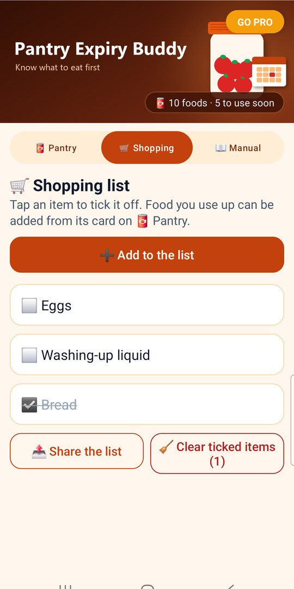

🌍 International version

Everything below is the same text as the Manual in the app (📖 Manual tab).
Pantry Expiry Buddy keeps a list of the food in your fridge, freezer and cupboards with the date on each pack, and shows what to eat first. A reminder each morning tells you what to use today or tomorrow, and a shopping list keeps track of what to buy.
Everything stays on your phone: no account and no ads.
On 🥫 Pantry, tap ➕ Add food. Type the name, and the amount if you like (e.g. 2 tins), pick where it is (🥛 Fridge, 🧊 Freezer or 🥫 Cupboard) and the date on the pack. Use the quick buttons (+3 days, +1 week, +1 month) or 📅 Pick the date.
Choose which date it is: "Use by" or "Best before", or "No date" for food without one.
Tap 📷 Scan a barcode and hold the phone over the barcode on the pack. The camera screen is Google's code scanner, built into Android through Google Play services, so the app doesn't need permission to use your camera.
The first time you scan a product, type its name. Pantry Expiry Buddy remembers it on your phone, so next time the name and place are filled in for you: you only add the date. Nothing is looked up online.
The first time, Android may take a moment to get the scanner ready.
"Use by" is about safety: don't eat food after its use-by date, even if it looks and smells fine.
"Best before" is about quality: food is often fine after its best-before date. Check how it looks and smells before you eat it.
Always follow the storage instructions on the pack. Freezing food before its use-by date keeps it longer: when you move it to 🧊 Freezer, change the date to the one you want to use it by.
At the top of 🥫 Pantry, ⚠️ Use first lists what's past its date, due today, or due in the next 3 days. Below it, everything else is listed in date order, soonest first; food with no date comes last.
Show one place at a time with the place button (e.g. 🧊 Freezer only), or All places.
Tap a food to say what happened to it: ✅ Used it or 🗑 Threw it away (both take it off the list and count it in this month's tally), ✏️ Change it, or 🛒 add it to the shopping list. ❌ Delete is for food added by mistake (not counted).
At about 9:00 each morning, one note lists the food to use today or tomorrow, and anything past its date. If nothing is due, there's no note.
Switch it on or off at the bottom of 🥫 Pantry. Android asks once whether the app may show notifications. The time is approximate: Android groups reminders together to save battery.
On 🛒 Shopping, tap ➕ Add to the list, or add a food from its 🥫 Pantry card when it runs out. Tap an item to tick it off when it's in the trolley; 🧹 Clear ticked items removes them. Press and hold an item to remove it. 📤 Share the list sends it as text, e.g. to someone else doing the shopping.
Free: up to 30 foods at a time, barcode scanning, Use first, the morning reminder, the shopping list and this month's tally. No ads.
Pro (one payment, no subscription): as many foods as you like, 📄 the used and wasted report (PDF) month by month, 🖨️ a printable list of what's in your fridge, freezer and cupboards (PDF), and 📊 a spreadsheet (CSV) for Excel or Google Sheets.
Tap GO PRO at the top. Restore purchase gets Pro back on a new phone with the same Google account.
No account, no sign-in, and no ads. Your foods, shopping list and tally are kept only in the app's own storage on this phone. Pantry Expiry Buddy has no servers, and barcodes are never looked up online. Something only leaves the phone when you share it.
Uninstalling the app deletes everything it stored. Google Play handles the Pro purchase.
Pantry Expiry Buddy v1.0 (Build 1)
Publisher: AppStack Studio
| Question | Many expiry apps | Pantry Expiry Buddy |
|---|---|---|
| Ads | Often banner or full-screen ads | No ads, ever |
| Account | Often a sign-in and a cloud account | No account: your list stays on your phone |
| Dates | One "expiry" date for everything | Use by (safety) and best before (quality) kept apart |
| Price | Monthly or yearly subscriptions | Free for up to 30 foods; Pro is one payment for life (no subscription) |

1. Use first
What's past its date or due soon, at the top.

2. Add food
Name, place and the date on the pack: use by or best before.

3. Used it or threw it away
Tap a food when it's gone; the month's tally keeps count.

4. Shopping list
Tick items off in the shop, or share the list.
Screenshots: Pantry Expiry Buddy 1.0 on Samsung Galaxy phones, with made-up test foods.